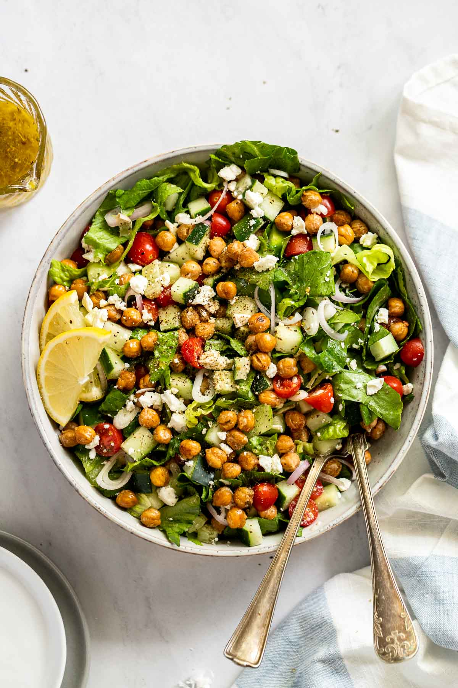

Roasted Chickpeas Greek Salad

Description
A fulfilling salad consisting of mixed crispy roasted chickpeas, a variety of vegetables, feta cheese,
spices and lemon herbs to enjoy at lunch or as a light dinner.
Ingredients
- 400g chickpeas
- Teaspoon oregano
- Teaspoon parsley
- A quarter of teaspoon garlic powder
- Olive oil, paprika, salt and pepper to taste
- 1 lemon
- A quarter of teaspoon lemon juice
- Tablespoon maple syrup
- 1 head romaine lettuce
- 240g cucumber
- Half a teaspoon cherry tomatoes
- 100g feta cheese
- 1 shallot
- 400g chickpeas
Steps
- Pre-heat oven to 400°.Drain and rinse chickpeas, then dry by rolling a paper towel over chickpeas.
-
Spread the chickpeas on a baking sheet (with edges); lightly drizzle them with olive oil. Sprinkle oregano, parsley,
garlic powder, paprika, salt, and pepper over chickpeas. Roll chickpeas around the baking sheet until all are
coated with olive oil and herbs. Bake for 25-30 minutes or until crispy, shaking them halfway through.
-
Whisk together lemon zest, lemon juice, dried oregano and parsley, and maple syrup or honey.
Slowly pour in the olive oil while whisking. Add salt to taste and adjust ingredients to preferred taste as needed.
-
Toss lettuce, cucumbers, tomatoes, shallot, feta, and roasted chickpeas together. Toss with the desired amount of dressing,
reserving what is left. Garnish with additional feta as desired and enjoy immediately.